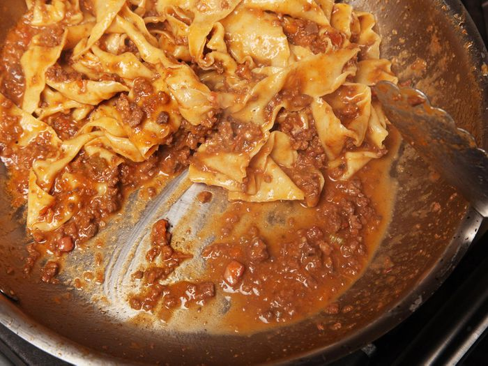

Kenji's Pressure-Cooker Ragu Bolognese

Description
The perfect ragu Bolognese doesn't have to take hours of slaving over a hot stove. Using a pressure-cooker, you can shave hours of the time needed, with no loss of flavor, aromoa, or texture
Creamy. Saucy. Perfection. Here's what you need to get started.
Ingredients
- 1 cup (225 milliliters) homemade or store-bought low-sodium chicken stock
- 4 packets powdered gelatin (1 ounce/30 grams)
- 2 tablespoons (30 milliliters) extra-virgin olive oil
- 1/2 pound (225 grams) finely diced pancetta
- 1 large onion, finely minced (about 1 1/2 cups/300 grams)
- 2 large carrots, finely chopped (about 1 cup/200 grams)
- 2 large stalks celery, finely chopped (about 1 cup/200 grams)
- 4 medium cloves garlic, minced (about 4 teaspoons/15 grams)
- 1/4 cup fresh sage leaves, minced (about 1/4 ounce/8 grams)
- 1/2 cup fresh parsley leaves, minced (about 1/2 ounce/15 grams), divided
- 1/2 pound (225 grams) finely minced chicken livers
- 2 pounds (900 grams) ground beef chuck (about 20% fat)
- 1 pound (450 grams) ground pork shoulder (about 20% fat)
- Kosher salt and freshly ground black pepper
- 2 cups (450 milliliters) dry red wine
- 1 (14-ounce/400-gram) can crushed tomatoes, preferably San Marzano
- 1 1/2 cups (350 milliliters) heavy cream, divided
- 2 bay leaves
- 3 ounces (80 grams) finely grated Parmesan cheese
- 1 to 2 tablespoons (15 to 30 milliliters) Vietnamese or Thai fish sauce
- 1/4 cup fresh basil leaves, minced (about 1/4 ounce/8 grams)
Directions
- Place stock in a 1-cup liquid measure and sprinkle with gelatin. Set aside.
- Heat olive oil in a pressure cooker over medium-high heat until shimmering. Add pancetta and cook, stirring frequently, until pancetta is browned and crisp, about 12 minutes. Add onions, carrots, celery, garlic, sage, and half of parsley and cook, stirring, until softened but not browned, about 8 minutes.
- Increase heat to high, add chicken livers, and cook, stirring, until livers are no longer pink, about 5 minutes. Add beef and pork, season with salt and pepper, and cook, stirring and breaking up meat with a wooden spoon or a potato masher, until meat is no longer pink, about 10 minutes. Continue cooking, stirring occasionally, until excess liquid has evaporated and the meat starts to sizzle, about 25 minutes.
- Add stock and gelatin mixture, wine, tomatoes, 1 cup heavy cream, and bay leaves. Seal and cook at high pressure (12 to 15 psi) for 30 minutes. Release pressure and remove lid. Simmer over moderate heat until thick and emulsified, 30 to 45 minutes longer.
- Stir in remaining 1/2 cup heavy cream, Parmesan, fish sauce, basil, and remaining parsley. Bring to a boil, stirring constantly to emulsify. Season to taste with salt and pepper. Bolognese can be cooled and stored in sealed containers in the refrigerator for up to 1 week.